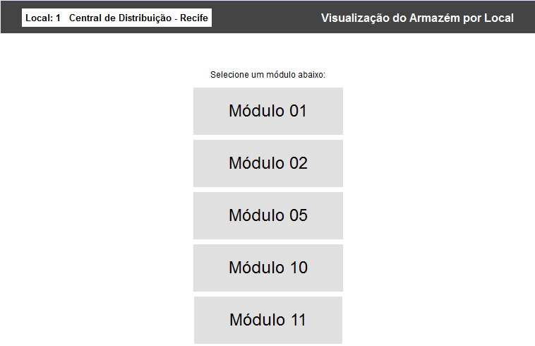

Visualização Gráfica do Armazém [ Voltar ]Utilize este
formulário para gerenciar, de maneira gráfica e intuitiva, o estoque contido nas unidades de armazenagem cadastradas no sistema.
Para acessar o formulário, vá ao menu "WMS" ("Warehouse Management System") na página inicial e clique no formulário "Visualização Gráfica do Armazém". Após clicar no formulário, o sistema abrirá a seguinte tela: 
Esta funcionalidade foi desenvolvida considerando um modelo onde os endereços de armazenagem são definidos em 5 níveis, no formato M-R-P-A-A:
A visualização do armazém por local representa o primeiro nível da navegação no armazém, onde são exibidos os módulos existentes em um local. Execute os passos abaixo para procurar o endereço de armazenagem desejado: Após clicar no formulário, o sistema abrirá a visualização do armazém por módulo, que representa o segundo nível da navegação no armazém, onde são exibidas as ruas existentes em um módulo, vistas de cima. Uma rua corresponde à área de tráfego de pessoas e equipamentos (por exemplo, empilhadeiras) para acesso aos produtos: Dica: para navegar entre os diferentes módulos, utilize os botões e . 2° Passo: clique para selecionar a rua . Para poder acessar, clique o nome da rua desejada. Após clicar no formulário, o sistema abrirá a visualização do armazém por rua, que representa o terceiro e último nível da navegação no armazém, onde são exibidos os endereços de armazenagem e sua ocupação: Dica: para navegar entre as diferentes ruas, utilize os botões A visualização da rua é sempre dividida em dois lados: lado esquerdo e lado direito. No lado esquerdo estão os prédios com numeração ÍMPAR, enquanto no lado direito estão os prédios com numeração PAR. Apartamentos Cada apartamento tem um número que, juntando com as informações de módulo, rua, prédio e andar, constitui o código do endereço de armazenagem em 5 níveis. Por exemplo, se um produto está localizado no endereço de codificação 05-2-9-3-1, isto significa que este produto está localizado no Módulo 05 – Rua 2 – Prédio 9 – Andar 3 – Apartamento 1. Os apartamentos são representados como quadrados no diagrama. Como pode ser visto na imagem acima, existem vários tipos de apartamentos:

Paletes O sistema permite alternar o modo de visualização do conteúdo dos endereços em dois modos: produto e palete. O modo de produto apresenta o conteúdo que está diretamente alocado no endereço de armazenagem, enquanto o modo de palete apresenta o palete que está alocado no endereço de armazenagem e os produtos que o compoem. O usuário pode alternar o modo utilizando os links Palete e Produto no canto esquerdo inferior da tela, abaixo do campo de pesquisa de produto. O modo que está em visualização no momento aparece em negrito e colorido de azul, conforme mostrado na imagem abaixo: O ícone que representa o conteúdo do endereço permite que o usuário diferencie se está visualizando no modo Produto - - ou no modo Palete - Categorias de Alerta Além de exibir o estoque padrão, o sistema indica visualmente sempre que um endereço de armazenagem contém produtos que estão classificados como produtos de risco (o qual é determinado no campo "Categoria de Alerta" do "Cadastro de Produtos"). No exemplo abaixo, os 3 primeiros andares do prédio 1 contém produtos classificados como inflamáveis. Observe que na janela de informação (mostrada ao clicar no campo duas vezes) é indicada qual é a categoria de alerta:  As categorías de alerta disponíveis são as seguintes:
Movimentando produtos / paletes entre endereços O usuário pode movimentar os produtos entre endereços, simplesmente clicando e arrastando as caixas de um apartamento para outro. Sempre que um produto é arrastado para um novo apartamento, este fica com o fundo preto, sinalizando que aquela é uma alteração feita pelo usuário. Observe, na figura abaixo, que um produto já foi movimentado para um novo endereço enquanto que o outro está sendo movimentado: Após arrastar os produtos desejados para os novos endereços, o usuário pode utilizar o botão Confirmar para criar o registro de movimentação, ou utilizar o botão Descartar para cancelar todas as alterações realizadas e retornar os produtos para os endereços de origem. O usuário pode também, a qualquer momento, clicar no botão Atualizar para recarregar a tela. Ao clicar em "Confirmar", o sistema cria o registro de movimentação, dá um alerta informando qual o número da movimentação e redireciona o usuário para a tela "Movimentar Produtos no Local". Observação: o sistema cria o registro, mas não processa a transação, o que deve ser feito pelo próprio usuário. Isso significa que os produtos só serão efetivamente movimentados entre os endereços quando este registro for conferido e processado pelo usuário - consulte o manual da tela "Movimentar Produtos no Local" para mais informações. Caso o usuário tenha movido paletes entre endereços utilizando o modo de visualização por palete, o sistema vai criar o registro na tela de movimentação de paletes ("Movimentar Paletes por Local"), ao invés da tela de movimentação de produtos, conforme mostrado na imagem abaixo. Área de Transferência (Esteira) O usuário pode movimentar produtos e/ou paletes entre ruas (e módulos). Para isso, foi criada uma área de transferência, também chamada de esteira, onde o usuário pode arrastar os produtos e mantê-los separados enquanto navega nas ruas/módulos do local. Para colocar um produto na área de trânsferência, basta arrastá-lo com o cursor do mouse até a esteira e depois soltá-lo: Observação: o sistema não permite confirmar a movimentação enquanto houver produtos na área de transferência. Pesquisa por Produto O sistema permite que o usuário consulte o código de um produto para localizá-lo visualmente nos endereços do armazém, podendo inclusive navegar entre os módulos e ruas do local até encontrá-lo. Para localizar visualmente um produto no armazém, digite o seu código no campo localizado no canto esquerdo inferior da tela, acima do seletor de modo Produto/Palete: Após clicar no botão "OK", os endereços que contenham o produto selecionado ficarão com a cor azul, para poder ser fácilmente identificados.. Dica de navegação: para retornar aos níveis superiores e navegar entre as diversas ruas e módulos, um atalho disponível está no canto superior esquerdo. Basta clicar no nível desejado: O nível onde o usuário se encontra no momento está contido no retângulo branco.
|
||||||||||||||||||
 . Ao visualizar o conteúdo de um palete, o sistema mostra, além dos detalhes de produto, o código do palete selecionad
. Ao visualizar o conteúdo de um palete, o sistema mostra, além dos detalhes de produto, o código do palete selecionad